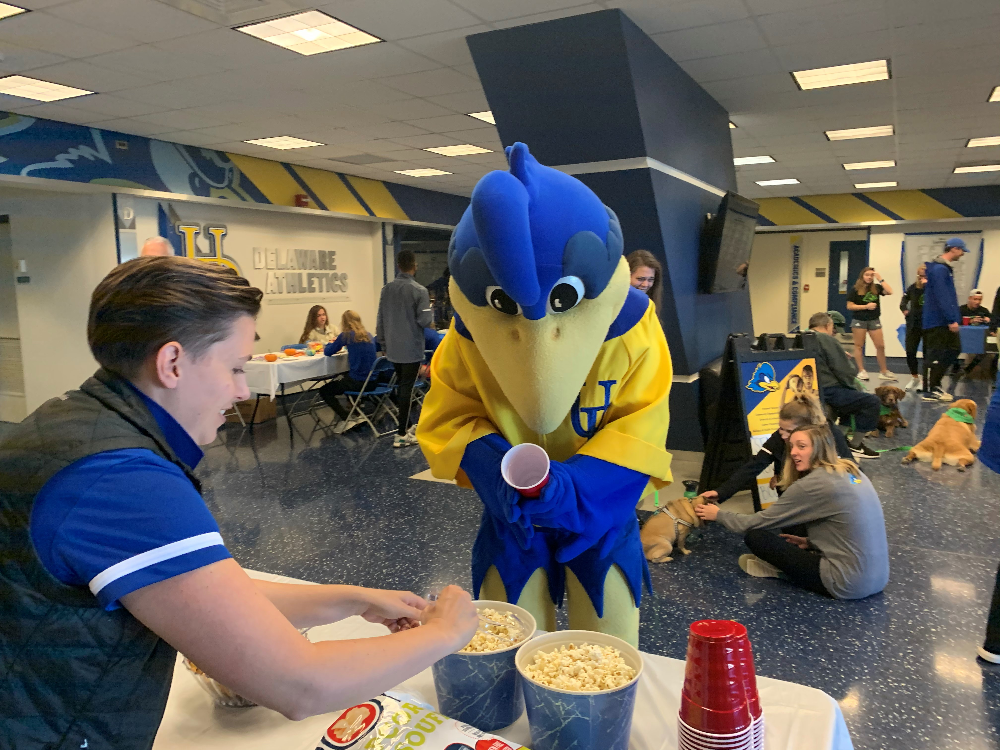
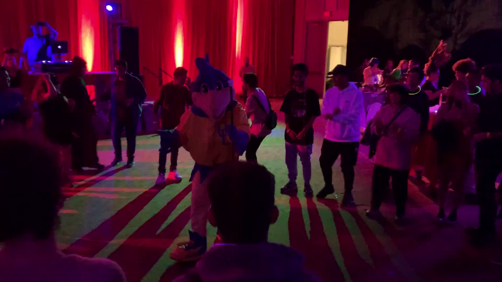
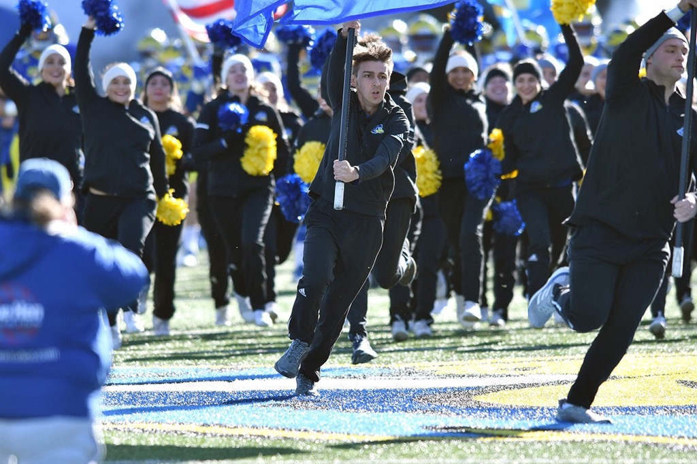
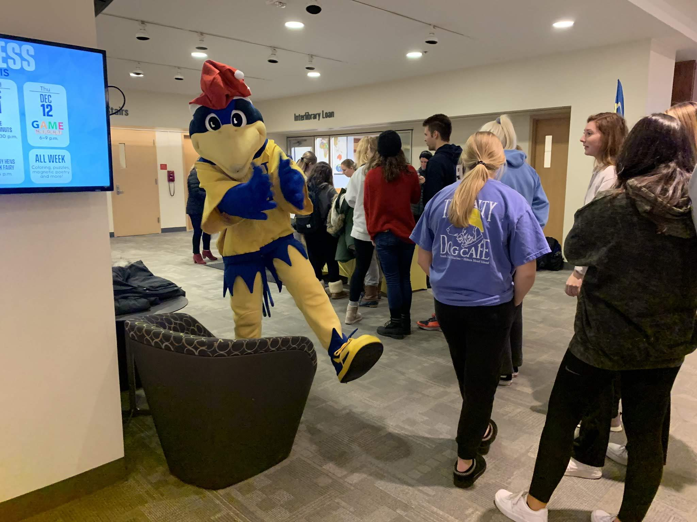
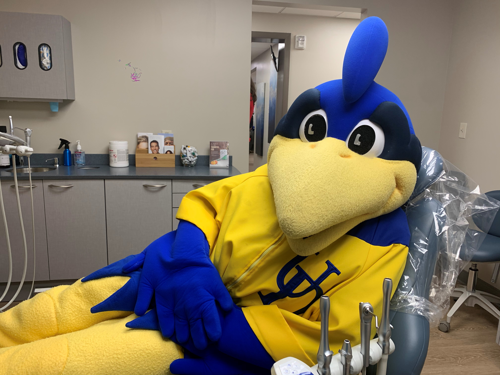

At the start of my sophomore year, I found myself with a lot of free time. I tried joining a few clubs, but I didn't find myself loving them. And for a few weeks, I was talking to my friends in the dining hall about how cool YoUDee looks and is. Then, I finally decided to step up and ask to join the team. Luckily, they needed just one more teammate, I tried out, and became a YoUDee.
This is a picture from my first event that I've ever done.
I still cringe when I see this photo because there's so many things wrong with it. The unconfident, inward pose; Looking down too much; The lack of reactions. However, I do like coming back to this photo because it reminds of where I've been, and how far I've come.
This is a picture from one of the first big fun events I did on campus. It was a night party, and I cannot even remember what this was for. I think it was just a random shindig thrown by the university student centers. My dancing skills were put to the test, and they were... okay.
This is me running one of the flags at the beginning of one of our football games. They're heavier than they look.
This is me at one my most memorable events as a mascot. It was certainly a low-tier event, considering some of the other things we get to do. But I loved most of all is towards the end: This event was a "Stress Less" event during finals week. And a student ran up to me and said "YoUDee, YoUDee, I really need a hug." Of course, I did not refuse. And they said "thanks, YoUDee, I really needed that." And that absolutely warmed my heart.
I'm getting my hen teeth checked out.